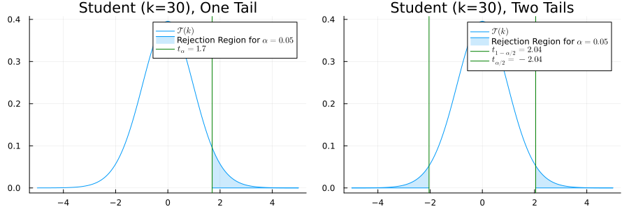
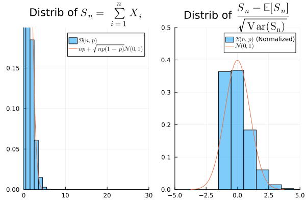

Goodness of Fit Tests
One Gaussian Population
Testing Mean with Known variance
- X = (X_1, \dots, X_n), iid with distribution \mathcal N(\mu, \sigma).
- Test Statistic: \psi(X) = \frac{\sqrt{n}(\overline X-\mu_0)}{\sigma} \; .
- \psi(X) \sim \mathcal N(0,1)

Why 0.05 and 1.96 ?
Testing Mean with Unknown Variance
Multiple VS Multiple Test Problem: H_0: \{\mu_0,\sigma > 0\} \text{ or } H_1: \{\mu \neq \mu_0,\sigma > 0\} \;.
\psi(X) = \frac{\sqrt{n}(\overline X-\mu_0)}{\sigma} no longer test statistic.
Idea: replace \sigma by its estimator \hat \sigma(X) = \sqrt{\frac{1}{n-1}\sum_{i=1}^n(X_i - \overline X)^2} \; .
This gives \psi(X) = \frac{\sqrt{n}(\overline X-\mu_0)}{\hat \sigma} \; .
Is \psi(X) pivotal under H_0 ? What is its distribution ?
Chi-Square and Student Distributions
- Proof idea: \overline X \cdot (1, \dots, 1) and (X_1 - \overline X, \dots, X_n - \overline X) are orthogonal in \mathbb R^n.
Student T-Test
Multiple VS Multiple Test Problem X=(X_1, \dots, X_n): H_0: \{\mu_0,\sigma > 0\} \text{ or } H_1: \{\mu \neq \mu_0,\sigma > 0\} \;.
(Student) T-Test Statistic: \psi(X) = \frac{\sqrt{n}(\overline X-\mu_0)}{\hat \sigma(X)} \sim \mathcal T(n-1)

Testing Variance, Unknown Mean
Two Gaussian Populations
Testing Means, Known Variances
We observe (X_1, \dots, X_{n_1}) iid \mathcal N(\mu_1, \sigma_1^2) and (Y_1, \dots, Y_{n_2}) iid \mathcal N(\mu_1, \sigma_1^2).
\sigma_1, \sigma_2 are known, \mu_1, \mu_2 are unknown
Test Problem: H_0: \mu_1 = \mu_2 ~~~\text{or} ~~~H_1: \mu_1 \neq \mu_2
Idea: Normalize \overline X - \overline Y: \psi(X,Y)=\frac{\overline X - \overline Y}{\sqrt{\frac{\sigma_1^2}{n_1} + \frac{\sigma_2^2}{n_2}}}
Two-Tailed Test for Testing Variance: T(X,Y)=\left|\frac{\overline X - \overline Y}{\sqrt{\frac{\sigma_1^2}{n_1} + \frac{\sigma_2^2}{n_2}}}\right| \geq t_{1-\alpha/2} \; ,
t_{1-\alpha/2} is the (1-\alpha/2)-quantile of a Gaussian distribution
Testing Variances, Unknown Means
- We observe (X_1, \dots, X_{n_1}) iid \mathcal N(\mu_1, \sigma_1) and (Y_1, \dots, Y_{n_2}) iid \mathcal N(\mu_2, \sigma_2).
- \sigma_1, \sigma_2, \mu_1, \mu_2 are unknown
- Variance Testing Problem: H_0: \sigma_1 = \sigma_2 ~~~~ \text{ or } ~~~~ H_1: \sigma_1 \neq \sigma_2
- F-Test Statistic of the Variances (ANOVA) \frac{\hat \sigma^2_1}{\hat \sigma_2^2} = \frac{\tfrac{1}{n_1-1}\sum_{i=1}^{n_1}(X_i-\overline X)^2}{\tfrac{1}{n_2-1}\sum_{i=1}^{n_2}(Y_i-\overline Y)^2}\; .
Fisher Distribution
- Two-tailed test: \frac{\hat \sigma^2_1}{\hat \sigma_2^2} \not \in [t_{\alpha/2}, t_{1-\alpha/2}] ~~~\text{(quantile of Fisher)}
Testing Means, Equal Variances
- We observe (X_1, \dots, X_{n_1}) iid \mathcal N(\mu_1, \sigma_1) and (Y_1, \dots, Y_{n_2}) iid \mathcal N(\mu_2, \sigma_2).
- \sigma_1, \sigma_2, \mu_1, \mu_2 are unknown, but we know that \sigma_1=\sigma_2
- Equality of Mean Testing Problem: H_0: \mu_1 = \mu_2 ~~~~ \text{ or } ~~~~ H_1: \mu_1 \neq \mu_2
- Formally, H_0 = \{(\mu,\sigma, \mu, \sigma), \mu \in \mathbb R, \sigma > 0\}.
Equality Means, Unequal Variances
- We observe (X_1, \dots, X_{n_1}) iid \mathcal N(\mu_1, \sigma_1) and (Y_1, \dots, Y_{n_2}) iid \mathcal N(\mu_2, \sigma_2).
- \sigma_1, \sigma_2, \mu_1, \mu_2 are unknown
- Equality of Mean Testing Problem: H_0: \mu_1 = \mu_2 ~~~~ \text{ or } ~~~~ H_1: \mu_1 \neq \mu_2
- Formally, H_0 = \{(\mu,\sigma_1, \mu, \sigma_2), \mu \in \mathbb R, \sigma_1, \sigma_2 > 0\}.
Asymptotic Approximations
Central Limit Theorem
Good Approx for (n=100, p=0.2)
Bad Approx for (n=100, p=0.01) 
Proportion Test
- We observe X \sim Bin(n_1, p_1) and Y \sim Bin(n_2, p_2).
- n_1, n_2 are known but p_1, p_2 are unknown in (0,1)
- H_0: p_1 = p_2 or H_1: p_1 \neq p_2
Example (reference)
- Question: “should we raise taxes on cigarettes to pay for a healthcare reform ?”
- p_1, p_2: proportion of non-smokers or smokers willing to raise taxes
- H_0: p_1=p_2 or H_1: p_1 > p_2
| Non-Smokers | Smokers | Total | |
|---|---|---|---|
| YES | 351 | 41 | 392 |
| NO | 254 | 195 | 449 |
| Total | 605 | 154 | 800 |
- \hat p_1 \approx 0.58, \hat p_2 \approx 0.21.
- \psi(X,Y)= \frac{\hat p_1 - \hat p_2}{\sqrt{\hat p ( 1-\hat p)\left(\frac{1}{n_1} + \frac{1}{n_2}\right)}} \approx 8.99
- \mathbb P(\psi(X,Y) > 8.99) =
1-cdf(Normal(0,1), 8.99)